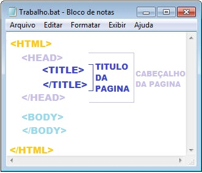
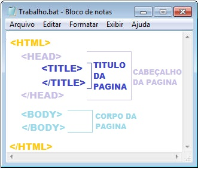
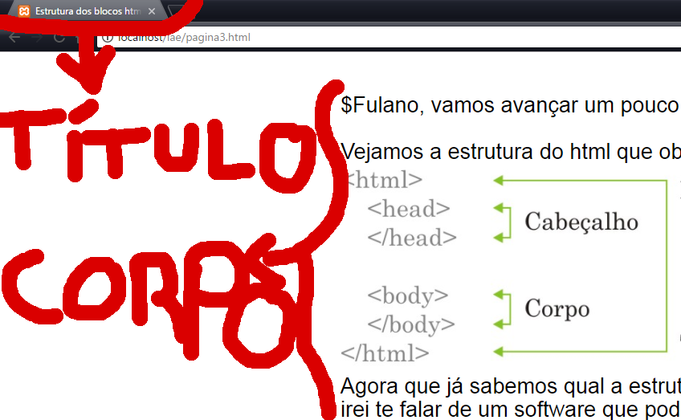

6. O que significa os blocos html
Agora que já sabemos quais os blocos da estrutura padrão e que podemos usar o software bloco de notas para escrever o código html, vamos avançar e entender para que serve cada bloco desses.
Para que serve o cabeçalho?

O corpo da página é onde devo escrever o meu texto, inserir imagens ou videos.

O resultado da página será visualizada da seguinte maneira.
